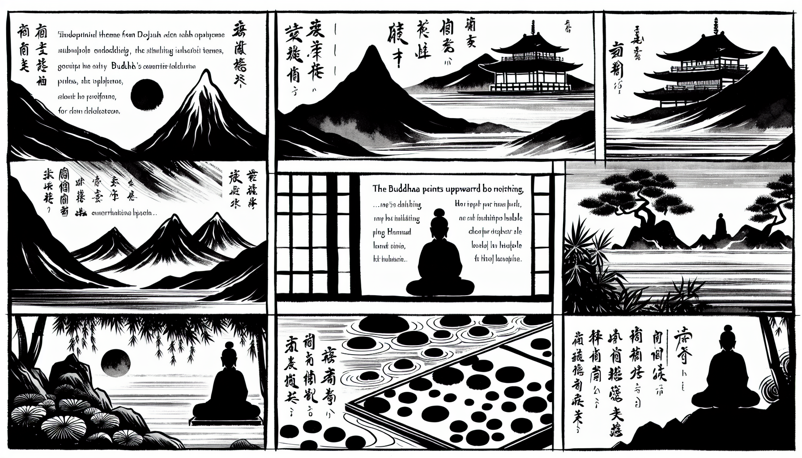

七十五巻 巻一覧
正法眼藏第26 佛向上事
本ページは tools/gen_web_volumes.py が doc/正法眼蔵.txt から冒頭を抜粋して生成しています。図・詳細解説は今後の手編集で拡張できます。
出典（原文）: https://shomonji.or.jp/zazen/doc/genzou.html
この巻の位置づけ（学習メモ）
道元『正法眼蔵』七十五巻の第26篇「佛向上事」です。禅籍・経典への引用や語の行間が重なりやすいので、一度ですべてを要約に還元しない読み方を推奨します。問答 Bot では巻スコープにこの題名を含めると応答が安定しやすいことがあります。
語彙の足場
- 題名語：巻題「佛向上事」は、道元が本章で特に扱う論点の看板です。辞書義だけに固定せず、本文中の用例で意味を確かめます。
- 引用と典故：公案・経文の引用は、一字一句の照応（何に答えているか）を押さえると全体が見えやすくなります。
- 学び方：冒頭だけでも音読し、分からない箇所は印を付けて後から問うとよいです。
本文（冒頭・自動抜粋）
出典はリポジトリ内 doc/正法眼蔵.txt です。原文の参照元: https://shomonji.or.jp/zazen/doc/genzou.html
高祖筠州洞山悟本大師は、潭州雲巖山無住大師の親嫡嗣なり。如來より三十八位の祖向上なり、自己より向上三十八位の祖なり。
大師、有時示衆云、體得佛向上事、方有些子語話分（佛向上の事を體得して、方に些子語話の分有り）。
僧便問、如何是語話（如何ならんか是れ語話）。
大師云、語話時闍梨不聞（語話の時、闍梨不聞なり）。
僧曰、和尚還聞否（和尚また聞くや否や）。
大師云、待我不語話時卽聞（我が不語話の時を待つて、卽ち聞くべし）。
いまいふところの佛向上事の道、大師その本祖なり。自餘の佛祖は、大師の道を參學しきたり、佛向上事を體得するなり。まさにしるべし、佛向上事は、在因にあらず、果滿にあらず。しかあれども、語話時の不聞を體得し參徹することあるなり。佛向上にいたらざれば佛向上を體得することなし、語話にあらざれば佛向上事を體得せず。相顯にあらず、相隱にあらず。相與にあらず、相奪にあらず。このゆゑに、語話現成のとき、これ佛向上事なり。佛向上事現成のとき、闍梨不聞なり。闍梨不聞といふは、佛向上事自不聞なり。すでに語話時闍梨不聞なり。しるべし、語話それ聞に染汚せず、不聞に染汚せず。このゆゑに聞不聞に不相干なり。
不聞裏藏闍梨なり、語話裡藏闍梨なりとも、逢人不逢人、恁麼不恁麼なり。闍梨語話時、すなはち闍梨不聞なり。その不聞たらくの宗旨は、舌骨に罣礙せられて不聞なり、耳裡に罣礙せられて不聞なり。眼睛に照穿せられて不聞なり、身心に塞却せられて不聞なり。しかあるゆゑに不聞なり。これらを拈じてさらに語話とすべからず。不聞すなはち語話なるにあらず、語話時不聞なるのみなり。高祖道の語話時闍梨不聞は、語話の道頭道尾は、如藤倚藤なりとも、語話纏語話なるべし、語話に罣礙せらる。
僧いはく、和尚還聞否。
いはゆるは、和尚を擧して聞語話と擬するにあらず、擧聞さらに和尚にあらず、語話にあらざるがゆゑに。しかあれども、いま僧の疑議するところは、語話時に卽聞を參學すべしやいなやと咨參するなり。たとへば、語話すなはち語話なりやと聞取せんと擬し、還聞これ還聞なりやと聞取せんと擬するなり。しかもかくのごとくいふとも、なんぢが舌頭にあらず。
洞山高祖道の待我不語話時卽聞、あきらかに參究すべし。いはゆる正當語話のとき、さらに卽聞あらず。卽聞の現成は、不語話のときなるべし。いたづらに不語話のときをさしおきて、不語話をまつにはあらざるなり。卽聞のとき、語話を傍觀とするにあらず、眞箇に傍觀なるがゆゑに。卽聞のとき、語話さりて一邊の那裡に存取せるにあらず、語話のとき、卽聞したしく語話の眼睛裏に藏身して霹靂するにあらず。しかあればすなはち、たとひ闍梨にても、語話時は不聞なり。たとひ我にても、不語話時卽聞なる、これ方有些子語話分なり、これ體得佛向上事なり。たとへば、語話時卽聞を體得するなり。このゆゑに、待我不語話時卽聞なり。しかありといへども、佛向上事は、七佛已前事にあらず、七佛向上事なり。
高祖悟本大師示衆云、須知有佛向上人（須らく佛向上人有ることを知るべし）。
時有僧問、如何是佛向上人（如何ならんか是れ佛向上人）。
大師云、非佛。
雲門云、名不得、状不得、所以言非（名づくること得ず、状どること得ず、所以に非と言ふ）。
保福云、佛非。
法眼云、方便呼爲佛（方便に呼んで佛と爲す）。
おほよそ佛祖の向上に佛祖なるは、高祖洞山なり。そのゆゑは、餘外の佛面祖面おほしといへども、いまだ佛向上の道は夢也未見なり。徳山臨濟等には爲説すとも承當すべからず。巖頭雪峰等は粉碎其身すとも喫拳すべからず。高祖道の體得佛向上事、方有些子語話分、および須知有佛向上人等は、ただ一二三四五の三阿僧祇、百大劫の修證のみにては、證究すべからず。まさに玄路の參學あるもの、その分あるべし。
すべからく佛向上人ありとしるべし。いはゆるは、弄精魂の活計なり。しかありといへども、古佛を擧してしり、拳頭を擧起してしる。すでに恁麼見得するがごときは、有佛向上人をしり、無佛向上人をしる。而今の示衆は佛向上人となるべしとにあらず、佛向上人と相見すべしとにあらず。ただしばらく佛向上人ありとしるべしとなり。この關棙子を使得するがごときは、まさに有佛向上人を不知するなり、無佛向上人を不知するなり。その佛向上人、これ非佛なり。いかならんか非佛と疑著せられんとき、思量すべし、佛より以前なるゆゑに非佛といはず、佛よりのちなるゆゑに非佛といはず、佛をこゆるゆゑに非佛なるにあらず。ただひとへに佛向上なるゆゑに非佛なり。その非佛といふは、脱落佛面目なるゆゑにいふ、脱落佛身心なるゆゑにいふ。
東京淨因枯木禪師［嗣芙蓉、諱法成］、示衆云、知有佛祖向上事、方有説話分。諸禪徳、且道、那箇是佛祖向上事。有箇人家兒子、六根不具、七識不全、是大闡提、無佛種性。逢佛殺佛、逢祖殺祖。天堂收不得、地獄攝無門。大衆還識此人麼。良久曰、對面不仙陀、睡多饒寐語（東京淨因枯木禪師［芙蓉に嗣す、諱は法成］、示衆に云く、佛祖向上の事有ることを知らば、方に説話の分有り。諸禪徳、且道すべし、那箇か是れ佛祖向上の事なる。箇の人家の兒子有り、六根不具、七識不全、是れ大闡提、無佛種性なり。佛に逢ひては佛を殺し、祖に逢ひては祖を殺す。天堂も收むること得ず、地獄も攝するに門無し。大衆還た此の人を識るや。良久して曰く、對面仙陀にあらず、睡多くして寐語饒なり）。
いはゆる六根不具といふは、眼睛被人換却木槵子了也、鼻孔被人換却竹筒了也、髑髏被人借作屎杓了也、作麼生是換却底道理（眼睛人に木槵子と換却せられ了りぬ、鼻孔人に竹筒と換却せられ了りぬ、髑髏人に借りて屎杓と作され了りぬ。作麼生ならんか是れ換却底の道理）。
このゆゑに六根不具なり。不具六根なるがゆゑに爐鞴裏を透過して金佛となれり、大海裏を透過して泥佛となれり、火焰裡を透過して木佛となれり。
七識不全といふは、破木杓なり。殺佛すといへども逢佛す。逢佛せるゆゑに殺佛す。天堂にいらんと擬すれば天堂すなはち崩壞す、地獄にむかへば地獄たちまちに破裂す。このゆゑに、對面すれば破顔す、さらに仙陀なし。睡多なるにもなほ寐語おほし。しるべし、この道理は、擧山匝地兩知己、玉石全身百雜碎なり。枯木禪師の示衆、しづかに參究功夫すべし、卒爾にすることなかれ。
雲居山弘覺大師、參高祖洞山。山問、闍梨、名什麼（雲居山弘覺大師、高祖洞山に參ず。山問ふ、闍梨、名は什麼ぞ）。
雲居曰、道膺。
高祖又問、向上更道（向上更に道ふべし）。
雲居曰、向上道卽不名道膺（向上に道はば、卽ち道膺と名づけず）。
洞山道、吾在雲巖時祗對無異也（吾れ雲巖に在りし時祗對せしに異なること無し）。
いま師資の道、かならず審細にすべし。いはゆる向上不名道膺は、道膺の向上なり。適來の道膺に向上の不名道膺あることを參學すべし。向上不名道膺の道理現成するよりこのかた、眞箇道膺なり。しかあれども、向上にも道膺なるべしといふことなかれ。たとひ高祖道の向上更道をきかんとき、領話を呈するに向上更名道膺と道著すとも、すなはち向上道なるべし。なにとしてかしかいふ。いはく、道膺たちまちに頂𩕳に跳入して藏身するなり。藏身すといへども露影なり。
曹山本寂禪師、參高祖洞山。山問、闍梨、名什麼（曹山本寂禪師、高祖洞山に參ず。山問ふ、闍梨、名は什麼ぞ）。
曹山云、本寂。
高祖云、向上更道（向上更に道ふべし）。
曹山云、不道（道はじ）。
高祖云、爲甚麼不道（甚麼と爲てか道はざる）。
師云、不名本寂（本寂と名づけず）。
高祖然之（高祖然之す）。
いはく、向上に道なきにあらず、これ不道なり。爲甚麼不道、いはゆる不名本寂なり。しかあれば、向上の道は不道なり、向上の不道は不名なり。不名の本寂は向上の道なり。このゆゑに、本寂不名なり。しかあれば、非本寂あり、脱落の不名あり、脱落の本寂あり。
盤山寶積禪師云、向上一路、千聖不傳。
いはくの向上一路は、ひとり盤山の道なり。向上事といはず、向上人といはず、向上一路といふなり。その宗旨は、千聖競頭して出來すといへども、向上一路は不傳なり。不傳といふは、千聖は不傳の分を保護するなり。かくのごとくも學すべし。さらに又いふべきところあり、いはゆる千聖千賢はなきにあらず、たとひ賢聖なりとも、向上一路は賢聖の境界にあらずと。
智門山光祚禪師、因僧問、如何是佛向上事（智門山光祚禪師、因みに僧問ふ、如何ならんか是れ佛向上事）。
師云、拄杖頭上挑日月（拄杖頭上日月を挑ぐ）。
いはく、拄杖の日月に罣礙せらるる、これ佛向上事なり。日月の罣杖を參學するとき、盡乾坤くらし。これ佛向上事なり。日月是拄杖とにはあらず、拄杖頭上とは、全拄杖上なり。
石頭無際大師の會に、天皇寺の道悟禪師とふ、如何是佛法大意（如何ならんか是れ佛法大意）。
師云、不得不知。
道悟云、向上更有轉處也無（向上更に轉處有りや無や）。
師云、長空不礙白雲飛（長空白雲の飛ぶを礙へず）。
いはく、石頭は曹谿の二世なり。天皇寺の道悟和尚は藥山の師弟なり。あるときとふ、いかならんか佛法大意。この問は、初心晩學の所堪にあらざるなり。大意をきかば、大意を會取しつべき時節にいふなり。
石頭いはく、不得不知。しるべし、佛法は初一念にも大意あり、究竟位にも大意あり。その大意は不得なり。發心修行取證はなきにあらず、不得なり。その大意は不知なり。修證は無にあらず、修證は有にあらず、不知なり、不得なり。またその大意は、不得不知なり。聖諦修證なきにあらず、不得不知なり。聖諦修證あるにあらず、不得不知なり。
道悟いはく、向上更有轉處也無。いはゆるは、轉處もし現成することあらば、向上現成す。轉處といふは方便なり、方便といふは諸佛なり、諸祖なり。これを道取するに、更有なるべし。たとひ更有なりとも、更無をもらすべきにあらず、道取あるべし。
長空不礙白雲飛は、石頭の道なり。長空さらに長空を不礙なり。長空これ長空飛を不礙なりといへども、さらに白雲みづから白雲を不礙なり。白雲飛不礙なり、白雲飛さらに長空飛を礙せず。他に不礙なるは自にも不礙なり、面面の不礙を要するにはあらず、各各の不礙を存するにあらず。このゆゑに不礙なり。長空不礙白雲飛の性相を擧拈するなり。正當恁麼時、この參學眼を揚眉して、佛來をも覰見し、祖來をも相見す。自來をも相見し、他來をも相見す。これを問一答十の道理とせり。いまいふ問一答十は、問一もその人なるべし、答十もその人なるべし。
黄檗云、夫出家人、須知有從上來事分。且如四祖下牛頭法融大師、横説豎説、猶未知向上關棙子。有此眼腦、方辨得邪正宗黨（黄檗云く、夫れ出家人は、須らく從上來事の分有ることを知るべし。且く四祖下の牛頭法融大師の如きは、横説豎説すれども、猶ほ未だ向上の關棙子を知らず。此の眼腦有つて、方に邪正の宗黨を辨得すべし）。
黄檗恁麼道の從上來事は、從上佛佛祖祖、正傳しきたる事なり。これを正法眼藏涅槃妙心といふ。自己にありといふとも須知なるべし、自己にありといへども猶未知なり。佛佛正傳せざるは夢也未見なり。黄檗は百丈の法子として百丈よりもすぐれ、馬祖の法孫として馬祖よりもすぐれたり。おほよそ祖宗三四世のあひだ、黄檗に齊肩なるなし。ひとり黄檗のみありて牛頭の兩角なきことをあきらめたり。自餘の佛祖、いまだしらざるなり。
牛頭山の法融禪師は、四祖下の尊宿なり。横説豎説、まことに經師論師に比するには、西天東地のあひだ、不爲不足なりといへども、うらむらくはいまだ向上の關棙子をしらざることを、向上の關棙子を道取せざることを。もし從上來の關棙子をしらざらんは、いかでか佛法の邪正を辨會することあらん。ただこれ學言語の漢なるのみなり。しかあれば、向上の關棙子をしること、向上の關棙子を修行すること、向上の關棙子を證すること、庸流のおよぶところにあらざるなり。眞箇の功夫あるところには、かならず現成するなり。
いはゆる佛向上事といふは、佛にいたりて、すすみてさらに佛をみるなり。衆生の佛をみるにおなじきなり。しかあればすなはち、見佛もし衆生の見佛とひとしきは、見佛にあらず。見佛もし衆生の見佛のごとくなるは、見佛錯なり。いはんや佛向上事ならんや。しるべし、黄檗道の向上事は、いまの杜撰のともがら、領覽におよばざらん。ただまさに法道もし法融におよばざるあり、法道おのづから法融にひとしきありとも、法融に法兄弟なるべし。いかでか向上の關棙子をしらん。自餘の十聖三賢等、いかにも向上の關棙子をしらざるなり。いはんや向上の關棙子を開閉せんや。この宗旨は、參學の眼目なり。もし向上の關棙子をしるを、佛向上人とするなり、佛向上事を體得せるなり。
正法眼藏佛向上事第二十六
爾時仁治三年壬寅三月二十三日在觀音導利興聖寶林寺示衆
正元元年己未夏安居日以未再治御草本在永平寺書寫之 懷弉
図解（4コマ・AI生成）
教義の根拠は本文・出典に従い、漫画は比喩の補助に留めてください。

深掘り（読解のコツ）
- 道元文は定義の羅列に見えても、多くの場合誤解への遮断と正伝の姿勢が背骨になっています。
- 「当体」「現成」「即」などの語が出たら、その巻独自の差別相にどう接続しているかをメモしておくとよいです。